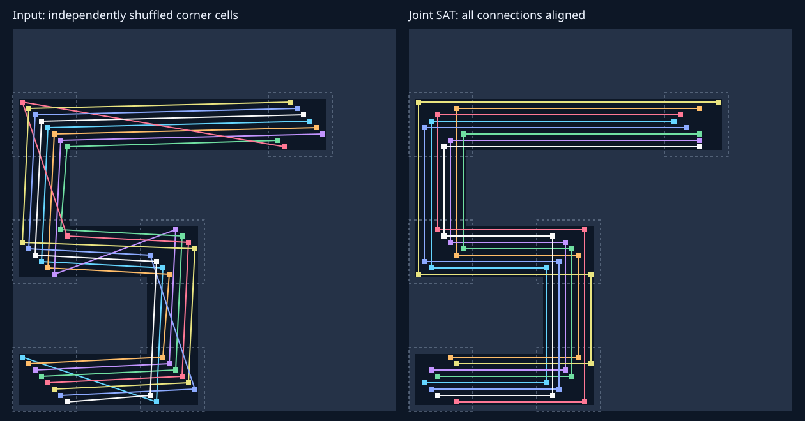

3s Terminal legalization for routability
Enabled by default; tuning and routed acceptance in progress — 2026-10-21.
Make the final cell legalization preserve critical placements and distribute cell area before the OpenROAD handoff at CTS. This is LiveHD's last placement operation. OpenROAD receives ordinary PLACED cells and can resize, buffer and move them. Spreader changes follow this evaluation; see 3r-route.
Routing acceptance correction: the earlier custom imports omitted
ASAP7 fastroute.tcl, normally run by OpenROAD floorplanning. Logs confirm
a maximum routing layer of Pad instead of M7, with the platform capacity
adjustment also absent. Therefore earlier zero-DRC and extracted-timing tables below
are diagnostic results under a looser routing setup, not acceptance under the intended
platform constraints. The active affected detail-route jobs were stopped with reasons
recorded in their cancelled.json files. New immutable
route_platform_v20 runs apply signal M2–M7, clock M4–M7 and the platform
capacity adjustment before CTS, plus the power-aware IO entry exclusions. Each run
checks its global-route log for the expected layer bounds before proceeding. CNN and
Eyeriss native placement jobs continue unchanged; a separate live-process monitor
starts corrected routes when their placement succeeds. The initial corrected global
routes for Minimax native and SHA3 replay default, critical-padding-1 and pair-limit-1024
all complete with zero reported congestion. Matched OpenROAD detailed-placement
comparators for Minimax and SHA3 use the same saved pre-legalization DEFs and identical
platform setup. Final DRC and extracted timing are pending; summarize.py
records only completed stages and also checks completed detailed-route wirelength
reports for unintended M8/M9/Pad use.
Verified platform-constrained route results
All completed route_platform_v20 runs below use ASAP7 signal M2–M7,
clock M4–M7, the platform capacity adjustment, and power-aware IO entry. Detailed
route confirms zero M8/M9/Pad wire; all have zero hold TNS. These results supersede
the looser-stack diagnostic results for acceptance purposes.
| Design / legalizer | DRC | Setup slack (ps) | TNS (ps) | Hold slack (ps) | Wire (µm) | Vias |
|---|---|---|---|---|---|---|
| MINIMAX native defaults | 0 | -123.005 | -96,683.160 | 34.312 | 122,623 | 227,658 |
| MINIMAX OpenROAD DPL | 0 | -110.986 | -97,836.562 | 34.478 | 125,370 | 231,364 |
| SHA3 replay critical padding 1 | 0 | 326.166 | 0.000 | 21.077 | 142,403 | 215,613 |
| SHA3 replay defaults | 0 | 342.983 | 0.000 | 21.001 | 141,790 | 215,006 |
| SHA3 native defaults | 0 | 329.790 | 0.000 | 15.111 | 142,097 | 218,230 |
| SHA3 OpenROAD DPL | 0 | 237.812 | 0.000 | 16.417 | 145,400 | 219,592 |
| SHA3 replay pair limit 1024 | 0 | 348.931 | 0.000 | 16.940 | 141,861 | 216,570 |
For the matched native-versus-OpenROAD comparison, SHA3 improves setup slack
by 91.978 ps, wire by 2.27% and vias by 0.62%. Minimax improves TNS by 1,153.403 ps,
wire by 2.19% and vias by 1.60%, but worsens setup slack by 12.019 ps. The separate
SHA3 replay comparison gains 5.948 ps setup slack with 1024 pairs, at the cost of
0.73% more vias and 4.061 ps less hold slack. Critical padding 1 worsens routed
setup slack by 16.817 ps despite a better preCTS estimate. No defaults change.
route_minimax_v24 is testing the replay default against a 78% bin cap
and 20% critical-net selection. CNN and Eyeriss native placement remain live.
Implementation
- Rank timed data nets by minimum pin slack, excluding clocks, resets and supplies. Select up to
10% globally. Eligible two-terminal nets share a horizontal or vertical bin strip. Solve their
placements jointly in one SAT instance, sharing one placement decision for each physical cell.
Endpoints stay in their original center bins and within configured displacement radii. Overlapping
candidate placements are mutually exclusive across all selected nets. Row/site legality,
pin-access witnesses, competing corridors and aggregate bin occupancy must all pass before commit.
The step-1 occupancy budget is the GP target density, leaving room below the hard cap. If a
selection conflicts, drop the least critical pair in the conflict core and re-solve the remaining
set jointly. Then minimize maximum displacement over the retained candidate menus. An optional
joint_minimize_totalobjective additionally minimizes total displacement while preserving the selected edges and maximum-displacement bound. No endpoint is locked before the joint solution. Multi-terminal nets await explicit RSMT-edge evidence. - Place the remaining selected critical cells near their GP positions and lock all accepted critical cells for the remainder of this transaction. Critical padding is independently tunable (default zero), so noncritical whitespace need not displace an otherwise legal critical cell.
- Try remaining same-bin connected pairs in timing order. Their occupancy allowance is
local_pair_fraction * target_density, initially half the GP target, including cells already installed. Accepted pairs stay locked. Later cells cannot obstruct an accepted corridor. - Search directly for available destinations, with no maximum bin distance. Reserve critical cells first, then place the remaining cells in timing order, so less critical cells absorb most of the displacement. Neighboring bins are searched when they can offer a closer physical site. This avoids repeated pushes and oscillation. If timing order fragments rows, restore only the unprotected remainder and retry widest-first. If nearest positions still split free space into unusable fragments, a final widest-first retry packs the padded footprints against gap/bin edges. Mandatory side spacing, critical locks and local-pair locks remain unchanged.
- Reserve left/right sites around remaining cells (initially one each side), and enforce a hard per-bin area cap (initially 80%). Macro bodies and rounded placement halos reduce actual usable row capacity; fixed standard cells consume capacity. Cells crossing bins contribute fractional area to every touched bin. An independent native legality check precedes output.
The mode replaces ordinary final detailed placement, tie relocation and post-GP optimization.
It defaults to synth.place.legalize.terminal=true. The user approved RSMT routing feedback,
5 µm macro halos, 256 critical-pair proposals, no local-pair proposals, total-displacement minimization,
remainder wire weight 4, and SAT budgets of 1000 ms / 10000000 conflicts.
Timing protection uses a fresh callback at the final GP checkpoint when available; geometric-only
flows have no timed nets to select. GP-only mode does not legalize. The terminal grid inherits the
native routing auxiliary grid, bounded for small cores by physical row height and widest-cell area
under the hard cap. Explicit replay grids are preserved.
What is guaranteed, and what is measured
The hard cap is never silently relaxed. Accepted locks never move in subsequent legalization steps. Failure leaves the input floorplan unchanged. Total area below the global cap is necessary, but row fragmentation, fixed geometry, padding and discrete cell sizes can still make a particular lock set or search fail. Exhausting candidate choices is a search failure, not a proof of infeasibility. Movable cells currently require a compatible single-height row/site.
Locking cells does not prove WNS non-regression: alignment and initial legalization can move critical cells, and displacement on other nets can affect timing. Compare fresh WNS/TNS and actual CTS/routing results. A straight pin-access witness is a geometric alignment constraint, not a committed wire or a detailed-route certificate. The joint stage conservatively accepts only two-terminal nets using bin-strip geometry and physical pin-access checks. It does not yet consume exported FLUTE tree edges.
Evaluation protocol
Use CNN (431,589 standard cells, 65 SRAMs), Eyeriss (303,935 standard cells, 1,040 SRAMs),
Minimax and SHA3. LiteEth was excluded because the saved native netlist does not satisfy its
current generated-clock SDC. Keep that diagnostic, rather than weakening the clock constraints.
Independent jobs run concurrently with bounded OpenROAD/GP thread counts. Artifacts live under
tmp/terminal_legalize_eval_20261021/; they are local and unversioned.
First replay the same saved DEF for fast legalizer ablations, using exact-pin slack exported by OpenSTA and matched LEF/Liberty/SDC/RC. These are re-legalized saved placements, not fresh-GP results. Then verify the integrated final-GP handoff. Finally run matched OpenROAD CTS, global routing and detailed routing. Record failures as well as successes; global routing alone does not establish routability.
Saved-placement results: v3 (superseded pairwise algorithm)
Hard cap 0.8, 64 by 64 bins, zero critical padding, one site per side for other cells. Critical and local SAT proposal budgets are 256 each in this screen. Different variants share frozen input geometry and timing. Numbers below are placement-estimated setup slack in ps, not routed timing.
| Design | Original | Locks only, 10% | Critical SAT, 10% | Critical + local SAT, 10% |
|---|---|---|---|---|
| CNN | -32639.754 | -32639.754 | -32640.106 | -32640.106 |
| Eyeriss | -56548.761 | -57058.877 | -57044.702 | -57043.824 |
| Minimax | -430.018 | -430.201 | -430.071 | -430.083 |
| SHA3 | 75.139 | 75.115 | 75.508 | 75.508 |
Protecting 20–30% improves the small designs slightly but worsens Eyeriss to about -64,800 ps. Thus the percentage needs evidence, not an assumption that more is better. CNN wirelength grows substantially under redistribution; TNS also regresses. No variant is yet accepted as a universal replacement. Candidate pruning and the revised destination search reduce CNN replay wall time from approximately 115 s to 54–58 s; Eyeriss takes approximately 10 s.
Critical slew and integration follow-up
Eyeriss's worst timed path includes an AOI gate whose other two data inputs have no finite
setup slack. Its untimed B-input slew rises from 388,952 ps in the original placement to
393,958 ps with v3 locks and 447,250 ps at 20% protection. Thus a fixed timed net can still
see timing change through an untimed side input. The optional critical_fanin_depth
(default 0, range 0–8) expands protection through those side-input nets, including their movable
fanout endpoints. Clock and supply nets are excluded. Supporting cells are counted separately;
this option is experimental and does not establish a timing guarantee.
Fresh GP-to-terminal-legalizer runs pass the component/master/fixed-position audit on SHA3 and Minimax. The DEF importer first materialized dangling-input tie cells; the accepted runs use that normalized netlist as input. CNN and Eyeriss saved fixed macro frames fail current pin-track checks; fresh macro-frame preparation is being evaluated rather than bypassing those checks. The final-stage callback is suppressed in terminal mode so it cannot trigger a later resynthesis/placement restart.
| Same final-GP input | Terminal legalization | OpenROAD DPL, pad 0 | OpenROAD DPL, pad 1 |
|---|---|---|---|
| SHA3 setup slack (ps) | 79.392 | 73.870 | 65.550 |
| Minimax setup slack (ps) | -432.407 | -435.318 | -437.435 |
These are matched-input placement estimates using OpenROAD DPL plus mirroring as the comparator. They do not claim a full-flow or routed improvement. An attempted native legacy replay was excluded from this comparison: its seed-coordinate audit showed that it restarted initialization.
Focused legalization/SAT/placement/CLI tests and the full bazel build -c dbg //...
pass. Tests cover cross-bin critical pairs, more-than-four-bin displacement, immutable locks through
a fragmentation retry, later OBS blockage of aligned corridors, capacity split across bins, interior
site recovery, optional untimed support, fixed cells, atomic failure and the exact final handoff.
Joint SAT revision
The earlier pairwise implementation could lock a nearest placement that blocked a later pair. The joint revision adds a regression requiring an earlier pair to move within its original bins so both pairs fit, a crowded-bin conflict-core regression preserving an unrelated weaker net, and a regression preventing alignment across original-bin boundaries. The solver wrapper exposes failed assumptions for both CaDiCaL and CryptoMiniSat. Previous v3/v4 timing and routing results apply to the old pairwise algorithm; the joint version requires a new four-design evaluation.
Joint revision benchmark screen (v6)
Frozen saved-placement replays pass legalization and OpenROAD placement checks on all four designs. With a 256-proposal screen, the joint solver retains 84 aligned pairs on CNN, 56 on Eyeriss, 116 on Minimax and 91 on SHA3, with no solver unknowns. At the larger proposal budget, Minimax retains 313 of 962 proposals and SHA3 retains 557 of 1,456. CNN and Eyeriss hit the one-second solver budget at 10,000 proposals and correctly fall back to critical-cell legalization; those runs are not counted as successful joint alignment. A ten-second trial resolves Eyeriss, retaining 859 pairs with no unknowns. CNN's longer trial retains a validated joint solution of 2,678 pairs; displacement minimization then reaches its budget and retains that solution.
The 256-proposal placement-estimated WNS values are -32639.754 ps (CNN), -57050.755 ps (Eyeriss), -430.690 ps (Minimax), and +74.781 ps (SHA3). CNN preserves its original WNS but still has substantial wirelength/TNS growth. The other three regress relative to their original placements. Thus functional joint-SAT correctness is established for these screens, but timing and routed acceptance remain open; no universal replacement settings are selected.
The native legacy replay using the new explicit DEF restart seed passes an exact coordinate and component audit for SHA3 (17,928 components) and Minimax (15,685). Earlier replay results without that seed remain excluded.
Total displacement and timing screen (v7)
The optional total-displacement objective uses a binary SAT cost adder over mutually exclusive placement choices. It retains the feasible selection and minimax bound. A budget expiry retains the last geometrically validated model; reports separately distinguish a feasible joint result, a proven maximum-displacement optimum, and a proven total-displacement optimum. All three SAT backends pass exhaustive small cost-bound tests, high-bit/overflow checks, and a joint-placement regression where an independent pair must stay at its original position.
| Design, 256 proposals | Aligned pairs | v6 stage-1 displacement (um) | v7 stage-1 displacement (um) | v7 placement setup slack (ps) |
|---|---|---|---|---|
| CNN | 84 | 18.198 | 16.794 | -32639.754 |
| Eyeriss | 56 | 20.250 | 15.066 | -57044.282 |
| Minimax | 116 | 39.150 | 23.382 | -430.288 |
| SHA3 | 91 | 30.564 | 22.032 | +75.657 |
The selected pair counts remain unchanged. With the larger proposal set, Minimax's total stage-1 displacement falls from 105.354 to 71.442 um, and SHA3's from 191.538 to 135.864 um. CNN and Eyeriss retain their previous large-set placement on optimization timeout. Enabling local pairs changes estimated timing little. Eyeriss with two levels of side-input protection improves setup slack to -56534.258 ps, about 14.5 ps better than the input, although total negative slack still worsens. CNN preserves worst slack but total negative slack and wirelength remain worse. These estimates guide diagnosis; small differences do not settle routed acceptance.
Via RC and first routed extraction
The LiveHD placement estimator in steiner_rc uses horizontal/vertical length
multiplied by directional wire resistance and capacitance. It has no explicit layer-transition
or via term. Alignment may therefore remove via overhead that the placement estimate misses.
A bend needs a via when it changes layers; its overhead depends on the selected via and layer
stack. No timing proxy has been added. Keep geometric alignment as an objective, use placement
estimates to investigate large regressions, and judge finalists with matched routed extraction.
Both SHA3 route_io runs finish detailed routing but retain one M2 spacing violation
at the clock port on the left die boundary. They are not clean routing passes. These runs use
the same current design SDC, unlike the archived SDC used by the placement screen; their saved
post-route SDC hashes match. The following comparison uses propagated clocks, identical Liberty
files, and OpenRCX extraction of the routed ODB with the platform's extraction rules.
| SHA3 route_io | Vias | Wirelength (um) | Remaining DRC | Extracted setup slack (ps) | Extracted setup TNS (ps) |
|---|---|---|---|---|---|
| Baseline | 221243 | 133930 | 1 | 107.113 | 0 |
| v3 pairwise critical | 226158 | 138331 | 1 | 102.970 | 0 |
This superseded pairwise candidate does not demonstrate a timing or via-count win; it does not evaluate joint SAT. Extraction plus STA takes about eight seconds per process, compared with roughly 13–14 minutes for detailed routing. Preserve this evidence while correcting the shared IO-boundary issue and evaluating the joint version. Eyeriss's fresh macro and cell GP run also completes; matched final-GP legalization and routing comparisons remain pending.
Whitespace displacement experiment (v8)
Zero-padding diagnostics separate density-driven movement from whitespace cost. On saved CNN, 40 bins initially exceed the hard 80% cap. Removing padding still moves cells by a total 2,534,635 um, versus 3,265,592 um with one site reserved on each side. On saved Eyeriss no bin initially exceeds the cap; removing padding reduces total movement from 203,991 to 487 um and changes estimated setup slack from -57044.282 to -56534.226 ps. Zero padding is a diagnostic, not the chosen whitespace policy.
The new opt-in padding_max_extra_rows defaults to zero, retaining mandatory
padding. A positive value permits an unprotected stage-5 cell to omit its own padding only when
this saves more than the configured number of row heights of displacement, or makes an exhausted
search succeed. Existing neighbors keep their reservations, accepted critical/local-pair locks
never move, and the hard density cap is unchanged. Reports count relaxed cells and append each
cell's actual padding to the TSV. The fragmentation retry resets padding decisions for only the
unprotected remainder. Tests independently check remaining gaps, locked coordinates and hard
capacity; all four placement/SAT tests, the CLI option test and the full debug build pass.
| Saved design | Padding budget (rows) | Cells with relaxed padding | Total displacement (um) | HPWL (um) | Estimated setup slack (ps) |
|---|---|---|---|---|---|
| CNN | 1 | 47858 | 3073269.600 | 11060726.818 | -32639.754 |
| Eyeriss | 1 | 20014 | 161816.886 | 6983355.978 | -56963.195 |
The 1/4/16-row sweep completes on all four designs. CNN and Eyeriss reduce movement, but SHA3's wirelength worsens. Eyeriss's four-row variant has a large estimated timing regression; two levels of side-input protection remove that WNS regression. With that protection the one-row budget gives -56534.258 ps setup slack, 6,977,975.779 um HPWL and 153,854.478 um total movement. TNS remains worse than the original placement, so this option remains experimental with no universal settings selected.
Clean SHA3 route and remaining large-design handoff work
Matched route_spaced runs use explicit four-track IO-pin separation on both inputs,
correcting the previous shared clock-port boundary violation. Both baseline and v7 joint SAT
complete CTS, global routing and detailed routing with zero final DRC violations.
Both use the archived manifest SDC, identical Liberty files, propagated clocks and OpenRCX rules.
| SHA3 | Vias | Wirelength (um) | Extracted setup slack (ps) | Extracted setup TNS (ps) | Detailed route (s) |
|---|---|---|---|---|---|
| Baseline | 221168 | 134007 | 110.689 | 0 | 458.3 |
| v7 joint SAT, total displacement | 225606 | 138249 | 109.276 | 0 | 445.3 |
This is a verified routing pass, not a quality win: the candidate adds about 2.0% vias and
3.2% wirelength and loses 1.4 ps of positive setup slack. The Minimax comparison is being repeated
with the same IO preparation. Large-design CTS remains unresolved: an Eyeriss diagnostic without
internal clock-wire repair inserts 192,069 delay buffers and fails their detailed placement in
both baseline and candidate. The initial route_reclock diagnostic is invalid:
a Tcl collection was passed incorrectly to remove_buffers, which removed all
removable buffers rather than the selected clock buffers. Its earlier 82-second CNN CTS
observation is withdrawn. A corrected diagnostic calls the internal command with the resolved
collection and audits every retained instance plus clock-leaf membership/polarity. The audits
pass (CNN 5,139 removals; Eyeriss 3,283; zero unselected removals or retained-cell changes).
These audited runs do not yet establish a successful large-design handoff.
Eyeriss's fresh final-GP input passes terminal legalization and OpenROAD placement checking. With v7 and two levels of side-input protection, estimated setup slack improves from -45534.911 to -45118.867 ps, but HPWL grows from 5,899,783.690 to 7,834,401.794 um and TNS worsens. The matched OpenROAD DPL pad-0/pad-1 outputs fail macro padding checks and are retained as failures. CNN's full macro-plus-cell run reached the driver's one-hour timeout; only its macro stage completed. The resumed cell-GP run completed in 1,710.8 seconds using that fixed-macro checkpoint, an explicit restart seed, and the frozen v8 binary. It produced a final-GP snapshot and terminal placement; independent OpenROAD placement checking now passes for that result and both v10 replays of its final-GP snapshot. The global-placement run predates the remote density update and the clock/reset exclusion policy; the v10 legalizer replays include control exclusion.
Wire-aware relocation and pre-CTS control exclusion
The v9 remainder objective combines GP displacement with incident timed-net HPWL. It only changes cells that cannot retain their GP location, and preserves critical locks, spacing and hard density limits. At weight 4, saved-placement CNN HPWL falls from v7's 11.309 million to 10.101 million um; Eyeriss falls from 7.036 to 6.873 million um. These remain worse than their original placements. Clock-excluded CNN HPWL still grows from 4.188 to 7.537 million um, so clock wirelength does not explain the remaining regression. These historical measurements still include reset nets and must not be described as the new data-only policy.
Remote density/regularity changes through f5eeb40eb were fast-forwarded with
local legalization work preserved. The user then clarified that pre-CTS clock/reset networks
must create no placement edges, force, congestion, timing priority, sizing or buffering.
The shared classifier follows characterized buffers/inverters and the clock path through ICGs,
while leaving gate enables and other functional data edges separate. Explicit root ports cover
synchronous resets whose semantics were lost during mapping. Cells still consume physical area.
Reset fanout construction is now disabled. Re-evaluation under this policy is required.
Validation after the pull: nine focused placement/legalization/repair/CLI test suites pass,
and bazel build -c dbg //... passes. All eight v10 saved-placement replays
(two wire weights across CNN, Eyeriss, Minimax, SHA3) pass OpenROAD placement checks.
Their exact exported control masks are identical between variants of each design and are
reused for independent OpenDB HPWL measurement:
| Design | Excluded nets | Input masked HPWL (um) | Weight 0 | Weight 4 |
|---|---|---|---|---|
| CNN | 5141 | 4187598.089 | 8720430.840 | 7517865.933 |
| Eyeriss | 4800 | 3870975.809 | 4099657.952 | 3937616.385 |
| Minimax | 5 | 96241.797 | 100759.398 | 99215.493 |
| SHA3 | 2 | 114219.520 | 118499.455 | 117120.101 |
The classifier excludes recognized clock/reset trees, but the mask is incomplete for controls whose identity was lost during synthesis (see the registered-reset audit below). It does not solve CNN's displacement regression. These are saved-placement legalization measurements, not routed QoR or a measurement of the new global placer. Under the unchanged downstream SDC, v10 weight 4 has estimated setup WNS/TNS of -32639.754/-185243989.848 ps (CNN), -56813.772/-295634586.381 ps (Eyeriss), -430.239/-264806.404 ps (Minimax), and +75.606/0 ps (SHA3). No new default tuning or routing victory is claimed.
Fresh CNN final-GP comparison
The resumed CNN run finished in 28.5 minutes. The following measurements use the same final-GP snapshot and connectivity. HPWL excludes the same 5,141 clock/reset nets in every row. Timing uses the unchanged downstream SDC and placement parasitics, not extracted routing. All three legalized outputs pass OpenROAD placement checks.
| Run | Masked HPWL (um) | Setup WNS (ps) | Setup TNS (us) | Legalizer seconds |
|---|---|---|---|---|
| Final GP input | 4765304.546 | -65069.465 | -2646.066 | — |
| Original v8 | 7201375.389 | -65062.558 | -2627.926 | 21.9 |
| v10 weight 0 | 7201720.995 | -65076.258 | -2628.446 | 19.7 |
| v10 weight 4 | 6085409.606 | -65076.258 | -2628.096 | 38.8 |
Weight 4 reduces masked HPWL by 15.5% relative to weight 0, but remains 27.7% above final GP. WNS regresses by 6.8 ps relative to GP. The v10 peak bin densities are 74.97% and 76.18%, respectively; neither exceeds the hard 80% cap. Both v10 runs retain only 15 of 256 selected SAT pairs after conflict-driven reduction, although their retained joint model and both movement objectives finish successfully. Original v8 retained no pairs after an unknown solver result. This does not demonstrate joint optimization of the entire top 10%. Weight 4 moves one cell as far as 647.347 um (reported maximum bin distance 21), versus 221.261 um and 7 bins for weight 0. Further displacement and SAT-selection work is needed. No v10 result here has completed CTS and detailed routing.
Joint SAT refinement and registered-reset audit
v11–v15 prune overlapping alignment witnesses, add bidirectional endpoint support, balance candidate rows, pre-encode unavoidable track obstructions, and retain validated joint subsets after an initial solver timeout. The admission fallback shares one additional wall-time budget and re-solves every admitted endpoint jointly; earlier endpoints are not pre-installed. Wider CNN menus improve alignment coverage but have not established a timing win.
| Fresh CNN replay | Aligned pairs | Masked HPWL (um) | WNS (ps) | Legalizer seconds |
|---|---|---|---|---|
| v15: 12 poses, 1 s, wire 0 | 21 | 7203693.224 | -65084.102 | 20.6 |
| v15: 64 poses, 1 s, wire 0 | 5 | 7201948.562 | -65059.460 | 26.3 |
| v15: 128 wide poses, 1 s, wire 0 | 13 | 7202280.894 | -65056.817 | 38.6 |
| v15: 128 wide poses, 10 s, wire 0 | 97 | 7202616.273 | -65185.567 | 80.0 |
| v15: 128 wide poses, 10 s, wire 4 | 96 | 6084799.480 | -65177.027 | 98.9 |
All outputs pass OpenROAD placement checks. The 12-pose output is byte-identical to v14, whose score is reused. Wider menus use bounded admission after timeout; these are feasible subsets, not proven optima. None has routed acceptance.
Control-mask limitation: the worst fresh CNN path starts at
sub_356.RST/QN, a registered reset feeding data-pin muxes. Its nets are absent
from the 5,141-net v10 mask because top-port tracing stops at registers. Therefore the HPWL
columns above are masked measurements, not complete data-only HPWL, and original-SDC WNS is
reset-dominated. Preserve semantic clock/reset roles through synthesis and mapping before
using these paths to rank critical placement.
Native synthesis now preserves clock/reset role outputs across mapping, records the roles on
LGraph drivers, and carries them through hierarchy flattening and cached artifacts. Placement
resolves these roots to physical pins, including registered synchronous resets folded into data
logic. A nonempty control_ports explicitly replaces automatic clock/reset roots;
the empty default uses synthesis metadata and library evidence. Registered-reset regressions
pass with both ABC and usyn, including cached reruns and the override. Native QoR reports
prects_controls with resolved roots and excluded-net counts. The initial timing-weight
calculation also applies this mask. Native placement timing now masks non-clock control-net
arcs before propagating arrivals and required times, preserving clock launch/capture and physical
loads. Standalone original-SDC timing remains unchanged. Saved DEFs do not preserve the LGraph
metadata, and the CNN results above have not been rerun with the new classification.
Validation: all 82 selected synthesis, graph, partition, placement and CLI test targets pass,
and bazel build -c dbg //... passes. The registered-reset CLI regression also passes
with MAPPER=usyn.
Fresh automatic-control runs
The frozen native_metadata_v16 build uses the approved defaults,
including RSMT, and masks non-clock control net arcs during placement timing.
CNN and Eyeriss are running. Minimax and SHA3 completed native legalization;
peak bin densities are 79.9807% and 79.9985%, respectively, with 89 and 72
accepted critical pairs. Both passed OpenROAD placement checks, CTS, and global
routing. Detailed routing is still running; this is not a routing-success claim.
The SHA3 run exposed a reader limitation: several independent synchronous reset conditionals in one always block were left as ordinary data logic without reset attributes. A minimal paired fixture reproduced the difference from separate always blocks. The reader now retains reset attributes for disjoint nonblocking conditionals while keeping their original guards. Overlapping writes and blocking writes retain ordinary lowering. These benchmark results precede that fix and must not be presented as complete reset-exclusion validation.
The subsequent frozen native_metadata_v17/sha3 run detects both
clock and reset, excludes three control nets, and legalizes
15,326 cells with peak bin density 80.0%. It accepts 116 critical pairs in
1.54 seconds; masked HPWL is 110,782.8 µm, original-SDC pre-route WNS is
+298.91 ps and TNS is zero. Synthesis changed the cell count from the preceding
15,741-cell run, so this is a new baseline, not a legalizer-only comparison.
Its OpenROAD route completed with zero detailed-route DRC errors, 143,778 µm
wirelength and 219,026 vias. Extracted setup slack is +354.998 ps with zero TNS;
hold slack is +26.758 ps with zero hold TNS. The nine targeted reader/CLI reset
test targets and the full 3,934-target debug build pass after the reader fix.
The matched comparator starts from the same pre-legalization DEF and uses OpenROAD
detailed placement with one-site padding and mirroring before the same CTS/route flow.
It also completes with zero DRC errors. The comparison below uses extracted timing,
not placement-estimated timing.
| SHA3 legalizer | Setup slack (ps) | TNS (ps) | Hold slack (ps) | Wire (µm) | Vias | DRC |
|---|---|---|---|---|---|---|
| LiveHD terminal | 354.998 | 0 | 26.758 | 143,778 | 219,026 | 0 |
| OpenROAD detailed placement | 344.697 | 0 | 27.611 | 147,535 | 222,626 | 0 |
On this matched SHA3 input, terminal legalization improves setup slack by 10.301 ps, reduces wire by 2.55% and vias by 1.62%. Hold slack decreases by 0.853 ps but remains positive. The separate v16 Minimax route also finishes with zero DRC errors, 127,266 µm wire and 226,319 vias, but setup slack remains negative: −51.163 ps, TNS −18,697.778 ps. Its hold slack is +34.452 ps with zero hold TNS. These results do not establish CNN or Eyeriss routability.
Router track-grid handoff
The prior CNN DRT-0073 failure reproduces with one isolated
fakeram_w16_l512, without neighboring cells or PDN. Its first bottom
M3 input has no access point at origin x=100.000 µm; at x=100.017 µm the same
pin passes. The native fallback uses LEF offsets, while the ASAP7 platform
make_tracks file uses different offsets. The import's die-margin
adjustment also shifts any tracks regenerated relative to DIEAREA.
synth.place.tracks now accepts literal platform
make_tracks data before macro alignment and exports that grid in
DEF. It defaults empty, preserving the existing DEF/LEF fallback. It includes
track-file contents in cache identity and refuses executable or unsupported
Tcl. The downstream import preserves existing tracks rather than regenerating
them after changing the die boundary. Five focused placement/options/CLI test
targets and the full 3,935-target debug build pass.
Frozen native_metadata_v18 runs CNN, Eyeriss, Minimax and SHA3 with
the shared-block reset fix and explicit ASAP7 platform tracks. Each successful
placement automatically starts the same CTS/route/extraction checks. Older runs
remain separate baselines. A diagnostic phase shift on an already completed CTS
layout overlaps newly inserted buffers; it is not an accepted placement or route.
Alignment must happen before cell packing and CTS, as in the native implementation.
A separate saved pre-CTS diagnostic shifts the 65 SRAMs by at most 0.024 µm
per axis and passes both OpenROAD placement and pin-access checks, with
macroNoAp=0. This confirms the phase mismatch independently of
standard-cell spreading; it is not yet a CTS/detailed-route acceptance result.
The v18 SHA3 detailed-route intermediate report at iteration 15 still has 40
violations; 28 are M2 signal/VDD shorts at the left or right core boundary, and
three more involve M3 power geometry at the top boundary. These are provisional
route results. A separate one-row versus two-row die-margin import probe finds
zero signal pin boxes overlapping the core in either case (maximum inward pin
depth 0.037 µm), so direct IO-pin overlap is not the explanation. Routing enters
the core on occupied power-rail tracks. The import currently places IO pins before
PDN generation; the OpenROAD edge-slot code checks excluded intervals and fixed
pin shapes, rather than traversing special-wire shapes. The benchmark-only power-aware handoff now builds PDN before IO placement and
excludes edge entry tracks occupied by M2/M3 power shapes, including via enclosures.
A separate rectangle-intersection audit of the exported database finds 30 direct
signal-entry/power overlaps in the old handoff and zero in the new handoff, for all
336 SHA3 signal pins. All 15,326 cell masters, coordinates, orientations and statuses
are identical. The new flow excludes 434 edge intervals and still has 1,335 available
IO slots. Its default, critical-padding-1 and pair-limit-1024 comparisons all pass
import, CTS and global routing; detailed routing and extraction remain pending.
These diagnostics live in native_metadata_v18/io_margin_probe and
legalize_sweep_v19d/*/*/route_power_aware. The exclusion geometry is
ASAP7-specific benchmark setup, not a new generic placement default.
Matched final-legalizer timing and tuning
The terminal placement path now records global_placement and
legalization timing rows around the final transaction, using the same
preCTS control exclusions. The diagnostic physical_repair tool can also
measure an unchanged retained placement with timing_only=true and
prects_timing=true; this requires a mapped LGraph so synthesis roles
survive. Ordinary retained timing continues to use the full SDC.
Fresh retained measurements of the v18 integrated placements give Minimax WNS −184.588 → −170.237 ps and TNS −219,415.424 → −196,258.815 ps; SHA3 WNS +277.152 → +299.078 ps and zero TNS. HPWL grows by 6.97% and 4.98%, respectively. These are preCTS estimates, not extracted routed timing.
The frozen native_metadata_v18/legalize_sweep_v19d sweep varies one
legalizer option at a time on the same saved global-placement checkpoint. All 18 runs
pass an independent audit of cell masters, coordinates, orientations and IO positions
before legalization, and all respect the 80% bin cap. Earlier v19c replay results are
invalid because hierarchical cell orientations were not restored. The replay importer
now restores and verifies the full hierarchy. The replay default is a separate baseline:
its output differs slightly from the continuous native run even with identical input
geometry; the cause has not been established.
| Variant | Minimax WNS (ps) | Minimax TNS (ps) | SHA3 WNS (ps) | SHA3 HPWL (µm) |
|---|---|---|---|---|
| Approved defaults | −169.449 | −194,659.135 | 299.162 | 110,689.836 |
| No pair alignment; retain critical locks | −184.909 | −220,594.318 | 298.779 | 110,653.781 |
| Critical fraction 5% | −191.370 | −221,310.528 | 299.179 | 111,323.068 |
| Critical fraction 20% | −168.718 | −194,815.005 | 299.148 | 110,432.930 |
| Critical padding 1 site | −170.383 | −195,956.051 | 347.065 | 111,468.270 |
| Critical pair limit 1024 | −168.248 | −195,276.125 | 347.151 | 110,644.508 |
| Remainder wire weight 0 | −169.109 | −196,457.756 | 299.152 | 113,399.041 |
| Remainder wire weight 8 | −169.417 | −194,320.132 | 299.162 | 110,729.330 |
SHA3 TNS is zero for every variant. Fanin depth 1 reproduces the replay default on both designs. SHA3 routing comparisons for the replay default, one-site critical padding and 1024-pair limit are running with identical downstream settings. No new default changes follow from these estimates. The full 3,935-target debug build and the placement and CLI timing-record checks pass after the replay/timing changes.
Automatic control cuts in native timing checkpoints
Native intermediate placement frames contained components but omitted nets: connectivity still lived in the placement view. Consequently the placement objective excluded clock/reset edges correctly, while the timing callback recomputed an empty reset-cut set. This affected criticality ranking and made native versus fresh retained timing inconsistent. All exposed FP, macro and final timing/repair snapshots now include current mapped connectivity, with collision-safe temporary net names and terminal aliases. FP topology refreshes rebuild that connectivity after accepted changes.
The new TimingCheckpointsCarryConnectivityForAutomaticResetCuts
regression reproduces the missing cuts before the fix and passes afterward
through actual incremental timing callbacks for FP and final placement. It
checks that a registered reset is cut at its functional load, data remains
reachable and clock timing remains present. Placement, repair, preCTS-network,
terminal-legalizer and physical-session test targets pass; the full 3,935-target
debug build and optimized driver/diagnostic builds pass. Frozen
checkpoint_fix_v27 runs replay the same saved final-GP geometry on
CNN, Eyeriss, Minimax and SHA3. Large v16 inputs remain placement diagnostics;
they do not establish explicit-track route acceptance.
Corrected large-design legalization and bounded-menu experiments
The v27 corrected-checkpoint replays finish legally on the saved v16 CNN and Eyeriss final-GP frames. Both obey the 80% hard cap. CNN WNS changes −93,672.039 → −93,866.563 ps, with 59 accepted critical alignments and a 36.522 s legalizer; Eyeriss changes −16,556.164 → −16,536.988 ps, with 18 alignments and a 49.660 s legalizer. These are placement RC estimates, not extracted results. CNN's remaining worst path is functional: a registered source-start signal reaches a pattern counter through heavily loaded data logic. Its extreme slew and load also put the timing model far outside ordinary characterization ranges; this signal must not be excluded as clock/reset.
menu_boxes_v29 tests 16 sites/4 rows/24 candidates and
32 sites/8 rows/48 candidates with 5 s SAT budgets, preserving original bins and
the same critical-net selection. CNN accepts only 34 and 36 pairs, versus 59
with defaults; its no-witness count rises from 161 to 222 and 220. Eyeriss
accepts 17 and 21, versus 18. Timing gains are negligible or negative. Larger
windows currently regenerate and prune candidate menus rather than retaining
the smaller menu as a subset, so increasing the window alone does not establish
better search coverage. Defaults remain unchanged; alignment-aware candidate
retention needs investigation before expanding the global spreader.
The explicit-track v18 Eyeriss placement has completed in 4,586.747 s;
its corrected platform route and matched OpenROAD detailed-placement comparator
are running. CNN v18 remains active. Frozen latest_checkpoint_v30
replays the corrected legalizer on these newer final-GP frames as each completes,
then launches route_latest_v31 with the same platform handoff. The
older automatically launched route harness is cancelled by exact driver/child
PID because it omits the required layer/capacity setup. The two CLI reset/timing
default regression targets also pass after the checkpoint fix.
Isolating the Minimax routing-guide failure
The v24 default replay reached CTS and global routing but failed DRT-0155.
Its saved ODB grid begins at −270 DBU with 570 DBU pitch, while all 33 M1 access
guides of net_12638 begin on phase zero. These guides span stored grid
boundaries despite having one-cell dimensions. This is a guide/grid handoff
inconsistency, not a detailed-routing convergence result. The cap78 and
critical20 variants complete with zero DRC; critical20 yields WNS −92.026 ps
and TNS −57,795.760 ps, but its matched default route was missing.
route_refresh_v28 reruns full global routing on each of the three
already repaired placements before detail routing and extraction. Independent
before/after checks prove identical cell geometry and net connectivity. Invalid
M1 access guides fall from 33 to zero for the default and remain zero for the
other variants. All three complete detailed routing with zero DRC and positive
hold slack. Extracted setup slack/TNS are −65.526/−30,941.038 ps (default),
−82.233/−40,697.742 ps (cap78), and −77.318/−30,699.504 ps (critical20).
The default has better worst slack; critical20 has slightly better TNS.
The matched OpenROAD detailed-placement comparator also completes with zero
DRC: −83.520 ps setup slack, −39,948.820 ps TNS and +34.635 ps hold slack.
The LiveHD default replay therefore improves setup slack by 17.994 ps and
reduces negative TNS magnitude by 22.55%, routed wire by 2.36% and vias by
0.97%. These compare the same original LiveHD final-GP checkpoint, different
final legalizers, and identical downstream CTS/repair plus full routing refresh;
they do not compare against OpenROAD global placement. All four routes retain
the M2–M7 signal/M4–M7 clock limits; completed DRT logs show zero M8/M9/Pad wire.
The additional refresh materially changes timing, so the earlier no-refresh
numbers remain a separate experiment rather than an interchangeable baseline.
SAT-budget ablation
legalize_budget_v21 adds independent terminal budget controls to the
replay diagnostic and compares 1 s, 5 s and 20 s, plus disabled total-displacement
optimization and a 1024-pair case. All twelve runs retain identical input geometry
and respect the 80% cap. With 256 selected pairs, 5 s proves minimum total
candidate displacement on both Minimax and SHA3; 20 s produces the same result.
Minimax WNS changes −169.449 → −169.158 ps, but TNS worsens slightly
(−194,659.135 → −194,709.694 ps). SHA3 WNS changes 299.162 → 299.174 ps and
HPWL 110,689.836 → 110,624.079 µm. The 1024-pair case still reaches the 5 s
budget without changing its output. These small estimate gains do not justify
changing the approved 1 s default. The full 3,935-target debug build passes.
A separate legalize_density_v22 sweep is testing 76%/78% bin caps and
two-site ordinary padding against the same checkpoint.
Preserving usable row space during fallback packing
A new regression establishes a feasible case the previous retries rejected: three one-site cells with one site of padding on each side fill a nine-site row, but choosing the middle location first leaves unusable fragments. The final fallback now restores only unprotected cells and places padded footprints against gap/bin edges in widest-first order. A companion regression fixes two critical cells beside that row segment and verifies they remain unchanged. Both the terminal-legalizer and placement test targets pass, as does the full 3,935-target debug build.
The frozen legalize_gap_v23 replay resolves both previously failed
two-site-padding runs. Independent row/site and padded-overlap checks pass for
all 14,766 Minimax and 15,326 SHA3 cells; all 2,842 and 4,042 protected cells,
respectively, retain their baseline positions. No padding is relaxed and both
runs remain below the 80% bin cap. Default DEF files are byte-identical before
and after the fix. Two-site padding increases HPWL to 70,125.029 µm (Minimax) and
115,961.803 µm (SHA3), with Minimax TNS worsening to −202,422.341 ps. This improves
packing robustness, not the evidence for a larger default padding value.
The critical-alignment transaction also now contributes to the
anchored_pairs/joint_pairs totals. Previously those
counters covered only optional local alignment, making global SAT runs appear
to have zero jointly moved pairs despite nonzero critical_pairs.
The regression with two globally coupled pairs checks one pair with both
endpoints moved and one with an endpoint retained; placement geometry is
unchanged by this reporting correction.
Recovering alignments lost by independent menu pruning
A small regression shows why larger windows alone were unreliable: with two choices per cell, independently selecting the nearest X on different rows leaves no nonoverlapping horizontal alignment, even though two jointly chosen poses suffice. Additional regressions exercise a vertical connection with different site offsets and a recovered pair sharing a cell with an already supported net. The vertical and shared-cell cases also exposed premature pruning inside the refinement pool.
The final implementation explores complete local site/row domains only in connected components containing an unsupported pair. It indexes oriented, wire-width-inset pin-access intervals, verifies actual track access and obstacles, and keeps support for each endpoint pose on each track. The final per-cell menu still obeys the configured candidate cap. No cells are installed by preprocessing; shared cells remain single decisions in the global SAT solve. Fully supported components keep their prior menus. The three new regressions and the existing saturated-maze suite pass, along with the placement and SAT-legalizer targets. The complete debug build passes after extracting the refinement into its own helper (3,935 targets); the optimized placement, terminal-legalizer and SAT targets pass.
Frozen support_menu_v33 replays the same latest explicit-track
CNN/Eyeriss GP frames and the same Minimax/SHA3 frames as the corrected baselines.
Early accepted critical-pair counts change 16 → 20 (CNN default), 6 → 8 (Eyeriss
default), 125 → 127 (Minimax) and 149 → 152 (SHA3). Wider CNN windows recover 48
and 67 alignments at 16 sites/4 rows/24 candidates and 32 sites/8 rows/48
candidates; Eyeriss reaches 27 and 30 respectively. These are accepted joint-SAT
alignments, not routing certificates. Independent geometry, seed-preservation and fractional density audits pass for all
eight replays. Wider windows do not give a consistent estimated timing improvement;
no defaults change. route_support_menu_v36 evaluates the small-design
defaults and a matching SHA3 OpenROAD comparator with the same full GRT refresh
used in the completed Minimax v28 comparison.
The completed v36 SHA3 comparison uses identical full GRT refresh: LiveHD setup slack 316.678 ps versus OpenROAD DPL 326.299 ps, both TNS 0 and DRC 0. LiveHD wirelength is 141,773 µm versus 145,463 µm and vias 216,104 versus 220,848. The timing result is 9.621 ps worse despite fewer wires and vias. This compares final legalization of the same LiveHD GP frame, not OpenROAD global placement.
Macro row-cut handoff diagnostics
Eyeriss v20 native placement passes import but fails CTS detailed-placement
padding checks on 60 SRAM instances. Its OpenROAD-DPL comparator fails the same
class of check on 155 SRAM instances. The DEF handoff omitted the normal
tapcell.tcl row-cut step. An independent probe starting at the saved
post-CTS/pre-repair frame passes detailed placement and all placement checks after
cut_rows -halo_width_x 5 -halo_width_y 5.
route_rowcut_v34 restores the approved 5 µm macro halo as placement
row cuts before PDN. Both CNN imports pass. Eyeriss exposes an additional PDN-0179
failure: the existing follow-pin PDN setup cannot repair a narrow M2 supply
channel after row cutting. route_rowcut_resume_v35 therefore retains
the successful full-row PDN geometry, then cuts placement rows before CTS; its
OpenROAD comparator builds the same PDN before cutting rows and legalizing.
The native import and CTS pass; global routing is running. The comparator fails
DPL-0036 under OpenROAD’s default bounded displacement, so a full-core search
is still needed for that comparison. An independent audit proves all 388,627 component
names, masters, XY positions, orientations and statuses identical before and
after cutting rows; only the row set changes (5,258 → 89,785 fragments).
The optimized IO exclusion helper also reproduces all 11,044 original Eyeriss
exclusion regions exactly while avoiding interior via-box expansion. These
handoff fixes do not relax routing layer bounds, capacity or DRC checks.
Saturated maze regression
A synthetic maze has eight legal tracks per channel, 48 movable cells at the six waypoints, and 40 two-terminal connections forming eight parallel paths. Each corner cell is shared by its incoming and outgoing net. Cells begin independently shuffled inside their original bins. Joint SAT recovers all 40 alignments, uses all eight tracks on every leg, preserves original bin membership, and passes independent cell-overlap, wall-obstruction and same-layer corridor overlap checks. A four-track version also passes; requesting five paths through that four-track maze triggers selection reduction without a solver timeout. The cut capacity is known from the fixture geometry, independently of the solver result.
The test exposed excessive lazy conflict enumeration. The encoding now identifies a common track segment shared by an edge's candidate witnesses and explicitly makes competing uses mutually exclusive. Geometric refinement uses the configured time budget rather than an arbitrary iteration count. These are placement/corridor tests, not detailed-router certificates.

Reproduce with bazel test -c opt //pass/place:terminal_legalize_test
--test_filter='TerminalLegalize.*Maze*'. The test writes parallel_maze.svg
inside Bazel's undeclared test outputs.
Remaining acceptance work
- Complete matched CTS/detail-route checks and extracted timing; distinguish IO-access and PDN handoff failures from cell-placement congestion.
- Resolve Eyeriss WNS sensitivity and CNN displacement/wirelength growth, using the per-cell and per-bin reports before changing the global spreader.
- Tune critical fraction, critical and ordinary padding, SAT search radius/budget, local-pair budget and bin cap individually. Keep routing success ahead of timing ranking.
- After choosing the best legalizer settings, use excess-area and displacement maps to compare LiveHD's spreading/inflation with OpenROAD and reduce the legalization work at its source.